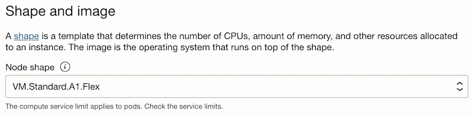
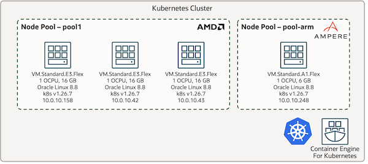

1.2.5.1 Ampere (Arm) Node Pool 추가하기
오라클은 2021년 5월부터 Arm 기반의 Ampere A1 Compute Shape을 가상 머신에서 사용할 수 있습니다. Ampere는 ARM 기반 서버 성능 비교에서 보듯이 뛰어난 가성비를 제공합니다.
여기서는 OKE에서 가성비를 이용하기 위해 Ampere (Arm) Node Pool을 추가로 구성하여 활용하는 방법을 알아봅니다.
설정 순서
-
Shape: 추가 Node Pool을 생성할 때 Shape을 Ampere A1으로 선택합니다.
-
Taint: 일반적으로 그동안 x86기반 이미지를 기본으로 사용해 왔고, 해당 이미지가 여전히 멀티 아키텍처를 지원하지 않을 수 있습니다. 기 배포 설정 파일을 사용하는 해당 이미지가 Arm Node Pool에 스케줄되는 것을 막을 필요가 있습니다. Arm 사용 노드에 taint 조건을 지정할 필요가 있습니다.
-
예시
kubectl taint nodes NAME arch=arm64:NoSchedule -
매번 생성된 Node에 매뉴얼하게 위 명령을 수행할 수 없기 때문에, 자동으로 설정하기 위해서는 Node 생성시 cloud-init으로 설정할 필요가 있습니다. cloud-init을 통해 kubelet에 아래 옵션을 추가합니다.
- 자세한 설명은 1.10.2 cloud-init으로 kubelet 옵션 변경하기을 참고하세요,
–register-with-taints string Register the node with the given list of taints (comma separated <key>=<value>:<effect>). No-op if--register-nodeisfalse. (DEPRECATED: This parameter should be set via the config file specified by the kubelet’s--configflag. See kubelet-config-file for more information.)
-
-
Pod 배포 옵션 설정: arm 이미지를 지원하는 경우에, taint가 설정된 Node에 배포할 수 있도록 Pod 배포시 toleration 설정을 추가합니다.
Arm Node Pool 만들기
Node Pool 만들기
-
OCI 콘솔에 로그인합니다.
-
대상 OKE 클러스터로 이동합니다.
-
클러스터 상세정보에서 Resources > Node Pools을 클릭합니다.
-
Add node pool을 클릭합니다.
-
생성할 Node Pool의 기본 정보를 입력합니다.
-
Name: pool-arm
-
Node type: Managed
-
Version: 예, v1.26.7
-
Node Placement Configuration: Worker Node가 위치할 서브넷 지정
-
Shape and image: Ampere A1인
VM.Standard.A1.Flex를 선택합니다.
-
Node count: 1
-
Pod communication: Worker Node가 위치할 서브넷 지정
-
Show advanced options
-
Initialization script을 사용하여 taint를 설정합니다. (kubelet-config-file은 잘 안되서, 그냥 –kubelet-extra-args 사용)
#!/bin/bash curl --fail -H "Authorization: Bearer Oracle" -L0 http://169.254.169.254/opc/v2/instance/metadata/oke_init_script | base64 --decode >/var/run/oke-init.sh bash /var/run/oke-init.sh --kubelet-extra-args "--register-with-taints arch=arm64:NoSchedule"
-
-
나머지 항목은 요건에 맞게 설정합니다.
-
Add를 클릭하여 Node Pool을 추가합니다.
-
생성된 Node Pool 확인하기
-
생성된 Node는 기본적으로 CPU Architecture 유형이 레이블되어 있습니다. 아래와 같이 조회해 봅니다.
kubernetes.io/arch에 amd64 또는 arm64인지 확인할 수 있습니다.
$ kubectl get nodes -L kubernetes.io/arch,name --sort-by='{.metadata.labels.name}' NAME STATUS ROLES AGE VERSION ARCH NAME 10.0.10.158 Ready node 18d v1.26.7 amd64 oke-cluster-1 10.0.10.42 Ready node 10d v1.26.7 amd64 oke-cluster-1 10.0.10.43 Ready node 10d v1.26.7 amd64 oke-cluster-1 10.0.10.248 Ready node 8h v1.26.7 arm64 pool-arm-
OKE 클러스터 상의 Node Pool 구성

-
cloud-init으로 taint가 걸렸는지 확인해 봅니다.
$ kubectl describe node 10.0.10.248 Name: 10.0.10.248 ... Taints: arch=arm64:NoSchedule
Pod 배포해 보기
기본 애플리케이션 배포하기
-
일반적으로 배포하던 방식으로 배포파일을 작성합니다.
# nginx.yaml apiVersion: apps/v1 kind: Deployment metadata: name: nginx-deployment spec: selector: matchLabels: app: nginx replicas: 10 template: metadata: labels: app: nginx spec: containers: - name: nginx image: nginx:latest ports: - containerPort: 80 -
배포하고 배포된 Node를 확인합니다.
- taint가 걸린 10.0.10.248 노드에는 실행중인 Pod가 없는 것을 볼 수 있습니다.
$ kubectl apply -f nginx.yaml deployment.apps/nginx-deployment configured $ kubectl get pod -o wide NAME READY STATUS RESTARTS AGE IP NODE NOMINATED NODE READINESS GATES nginx-deployment-6b7f675859-9b69w 1/1 Running 0 29s 10.0.10.115 10.0.10.43 <none> <none> nginx-deployment-6b7f675859-d7fn4 1/1 Running 0 23s 10.0.10.173 10.0.10.158 <none> <none> nginx-deployment-6b7f675859-gdhx9 1/1 Running 0 23s 10.0.10.80 10.0.10.158 <none> <none> nginx-deployment-6b7f675859-gthnt 1/1 Running 0 29s 10.0.10.152 10.0.10.42 <none> <none> nginx-deployment-6b7f675859-hmdr5 1/1 Running 0 29s 10.0.10.7 10.0.10.158 <none> <none> nginx-deployment-6b7f675859-kxqpg 1/1 Running 0 29s 10.0.10.85 10.0.10.43 <none> <none> nginx-deployment-6b7f675859-m4j96 1/1 Running 0 23s 10.0.10.77 10.0.10.43 <none> <none> nginx-deployment-6b7f675859-pbcdc 1/1 Running 0 23s 10.0.10.238 10.0.10.42 <none> <none> nginx-deployment-6b7f675859-wfz8g 1/1 Running 0 22s 10.0.10.71 10.0.10.42 <none> <none> nginx-deployment-6b7f675859-zmgwc 1/1 Running 0 29s 10.0.10.23 10.0.10.42 <none> <none>
toleration을 추가하여 애플리케이션 배포하기
-
앞선 배포 파일에 taint에 대응하는 toleration을 설정합니다.
- docker hub상의 nginx 이미지는 multi architecture를 지원하여, arm 기반 노드도 지원합니다.
# nginx.yaml apiVersion: apps/v1 kind: Deployment metadata: name: nginx-deployment spec: selector: matchLabels: app: nginx replicas: 10 template: metadata: labels: app: nginx spec: containers: - name: nginx image: nginx:latest ports: - containerPort: 80 tolerations: - key: "arch" operator: "Equal" value: "arm64" effect: "NoSchedule" -
다시 배포하고 배포된 Node를 확인합니다.
- taint가 걸린 10.0.10.248 노드에도 실행중인 것을 볼 수 있습니다.
$ kubectl apply -f nginx.yaml deployment.apps/nginx-deployment configured $ kubectl get pod -o wide NAME READY STATUS RESTARTS AGE IP NODE NOMINATED NODE READINESS GATES nginx-deployment-55cc658fc8-26rhq 1/1 Running 0 20s 10.0.10.147 10.0.10.158 <none> <none> nginx-deployment-55cc658fc8-4phgq 1/1 Running 0 14s 10.0.10.236 10.0.10.158 <none> <none> nginx-deployment-55cc658fc8-5q6fd 1/1 Running 0 20s 10.0.10.48 10.0.10.248 <none> <none> nginx-deployment-55cc658fc8-7x48p 1/1 Running 0 20s 10.0.10.208 10.0.10.248 <none> <none> nginx-deployment-55cc658fc8-8fwsv 1/1 Running 0 20s 10.0.10.29 10.0.10.42 <none> <none> nginx-deployment-55cc658fc8-9rldx 1/1 Running 0 20s 10.0.10.198 10.0.10.43 <none> <none> nginx-deployment-55cc658fc8-dbd2n 1/1 Running 0 12s 10.0.10.129 10.0.10.42 <none> <none> nginx-deployment-55cc658fc8-hm7pm 1/1 Running 0 10s 10.0.10.205 10.0.10.43 <none> <none> nginx-deployment-55cc658fc8-rl67q 1/1 Running 0 14s 10.0.10.131 10.0.10.43 <none> <none> nginx-deployment-55cc658fc8-zn9fn 1/1 Running 0 15s 10.0.10.235 10.0.10.42 <none> <none>
Arm Node Pool에만 애플리케이션 배포하기
-
앞선 배포 파일에 추가 설정을 합니다.
-
taint와 toleration을 사용하면, taint가 설정된 Node에 배포할 수 있는지 없는 지 여부만 결정되어, taint가 없는 Node에도 배포가 됩니다.
-
Arm Node Pool에만 배포하기 위해서는 추가로 Node Affinity 또는 node selector를 같이 사용합니다. 여기서는 더 간단한 Node Selector를 사용하여, node의 label을 기준으로 배포될 노드를 선택합니다.
# nginx.yaml apiVersion: apps/v1 kind: Deployment metadata: name: nginx-deployment spec: selector: matchLabels: app: nginx replicas: 10 template: metadata: labels: app: nginx spec: containers: - name: nginx image: nginx:latest ports: - containerPort: 80 tolerations: - key: "arch" operator: "Equal" value: "arm64" effect: "NoSchedule" nodeSelector: kubernetes.io/arch: arm64 -
-
다시 배포하고 배포된 Node를 확인합니다.
- 모든 Pod가 arm 노드인 10.0.10.248 노드에서 실행중인 것을 볼 수 있습니다.
$ kubectl apply -f nginx.yaml deployment.apps/nginx-deployment configured $ kubectl get pod -o wide NAME READY STATUS RESTARTS AGE IP NODE NOMINATED NODE READINESS GATES nginx-deployment-799d665bbd-fr4ld 1/1 Running 0 45s 10.0.10.130 10.0.10.248 <none> <none> nginx-deployment-799d665bbd-ftdhg 1/1 Running 0 53s 10.0.10.97 10.0.10.248 <none> <none> nginx-deployment-799d665bbd-j2rms 1/1 Running 0 28s 10.0.10.108 10.0.10.248 <none> <none> nginx-deployment-799d665bbd-jb56x 1/1 Running 0 53s 10.0.10.87 10.0.10.248 <none> <none> nginx-deployment-799d665bbd-k7lt5 1/1 Running 0 42s 10.0.10.39 10.0.10.248 <none> <none> nginx-deployment-799d665bbd-l5w8k 1/1 Running 0 44s 10.0.10.196 10.0.10.248 <none> <none> nginx-deployment-799d665bbd-l6phv 1/1 Running 0 53s 10.0.10.68 10.0.10.248 <none> <none> nginx-deployment-799d665bbd-q9v6p 1/1 Running 0 26s 10.0.10.209 10.0.10.248 <none> <none> nginx-deployment-799d665bbd-sjr27 1/1 Running 0 53s 10.0.10.214 10.0.10.248 <none> <none> nginx-deployment-799d665bbd-vxqcb 1/1 Running 0 53s 10.0.10.106 10.0.10.248 <none> <none>
참고문서
이 글은 개인으로서, 개인의 시간을 할애하여 작성된 글입니다. 글의 내용에 오류가 있을 수 있으며, 글 속의 의견은 개인적인 의견입니다.